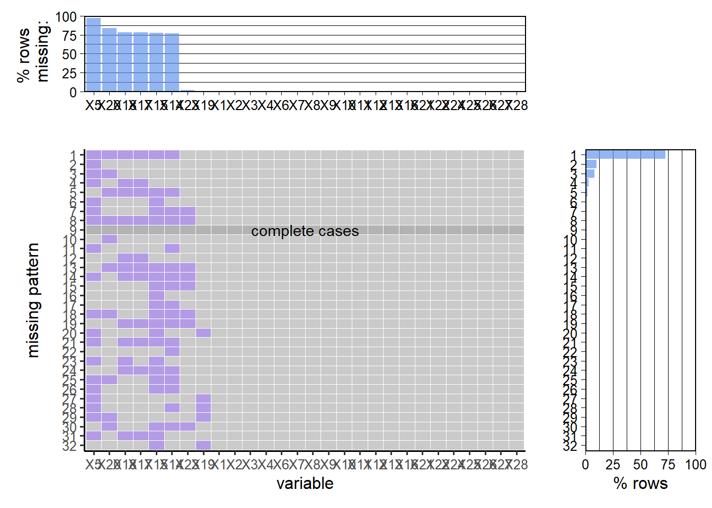

Chapter 3 Data
3.1 Sources
Our original data file, Hate_Crime.csv, is from the FBI’s Crime Data Explorer (CDE) (https://crime-data-explorer.fr.cloud.gov/pages/home). According to the description by the FBI, the data was collected through the FBI’s Uniform Crime Reporting (UCR) Program. UCR is a program aimed at providing reliable crime statistics for public use. Approximately 18,000 law enforcement units in the US participate in this program. Each unit voluntarily sends its data through the National Incident-Based Reporting System (NIBRS), which allows them to provide detailed information about a crime, such as offenders’ bias against specific social identity. At the end of each year, the FBI will release the data a year before with multiple sections through CDE, and Hate Crime Statistics is a dedicated collection along with others.
## The dimension of the dataset is 219577 rows and 28 columns.## The columns' names are:## [1] "INCIDENT_ID"
## [2] "DATA_YEAR"
## [3] "ORI"
## [4] "PUB_AGENCY_NAME"
## [5] "PUB_AGENCY_UNIT"
## [6] "AGENCY_TYPE_NAME"
## [7] "STATE_ABBR"
## [8] "STATE_NAME"
## [9] "DIVISION_NAME"
## [10] "REGION_NAME"
## [11] "POPULATION_GROUP_CODE"
## [12] "POPULATION_GROUP_DESC"
## [13] "INCIDENT_DATE"
## [14] "ADULT_VICTIM_COUNT"
## [15] "JUVENILE_VICTIM_COUNT"
## [16] "TOTAL_OFFENDER_COUNT"
## [17] "ADULT_OFFENDER_COUNT"
## [18] "JUVENILE_OFFENDER_COUNT"
## [19] "OFFENDER_RACE"
## [20] "OFFENDER_ETHNICITY"
## [21] "VICTIM_COUNT"
## [22] "OFFENSE_NAME"
## [23] "TOTAL_INDIVIDUAL_VICTIMS"
## [24] "LOCATION_NAME"
## [25] "BIAS_DESC"
## [26] "VICTIM_TYPES"
## [27] "MULTIPLE_OFFENSE"
## [28] "MULTIPLE_BIAS"As we discover, the data has 219577 rows and 28 columns. Most of the variables are categorical. INCIDENT_ID, ADULT_VICTIM_COUNT, JUVENILE_VICTIM_COUNT, TOTAL_OFFENDER_COUNT, ADULT_OFFENDER_COUNT, JUVENILE_OFFENDER_COUNT, VICTIM_COUNT, and TOTAL_INDIVIDUAL_VICTIMS are continuous variables. DATA_YEAR and INCIDENT_DATE should be date variables, but they are stored in int and chr.
Although the FBI provided an extensive and detailed dataset, it contains several issues. The most important one, as stated by the FBI, is that because a crime’s motivation is subjective, it is difficult to determine whether the crime is because of the offenders’ bias. Hence, law enforcement concludes a hate crime only if sufficient evidence proves it is a hate crime. This results in underestimating the overall occurrence of hate crimes, but it could guarantee the accuracy of our analysis. As we understood and interpreted the dataset, we found some problems regarding the quality of the dataset. Multiple columns contain value of empty string instead of NA, which leads to erroneous missing value analysis. Some observation contains multiple variables in the OFFENSE_NAME and BIAS_DESC columns. These situations are indicated in MULTIPLE_OFFENSE and MULTIPLE_BIAS. It is reasonable for a crime aimed at multiple groups of people with several offenses, but it creates obstacles when analyzing offense type and bias. Other problems, like TOTAL_OFFENDER_COUNT contains a massive portion of 0s, and adults and juveniles partition is not reported before 2013. Since we dropped these columns, we did not dig into the reason for these problems.
3.2 Cleaning / transformation
The first cleaning step is to extract the columns needed for our target. We have already mentioned our goal in the introduction section. Here we selected related columns and reduced it to 7 columns.
## The dimension of the dataset is 219577 rows and 7 columns.## The columns' names are:## [1] "INCIDENT_ID" "STATE_NAME" "REGION_NAME"
## [4] "INCIDENT_DATE" "OFFENDER_RACE" "OFFENSE_NAME"
## [7] "BIAS_DESC"Next, we will split the row with multiple BIAS_DESC and OFFENSE_NAME. Before the split, the unique entries in BIAS_DESC and OFFENSE_NAME are 279 and 353. After the split, the unique entries in BIAS_DESC and OFFENSE_NAME are reduced to 35 and 48. Note that this will create multiple rows for one crime and can lead to overcounting. Therefore, we will only count crimes with distinct INCIDENT_ID to overcome this issue.
## BEFORE## The unique BIAS_DESC counts is: 279.## The unique OFFENSE_NAME counts is: 353.## AFTER## The unique BIAS_DESC counts is: 35.## The unique OFFENSE_NAME counts is: 48.## The dimension of the dataset is 228912 rows and 7 columns.A strange pattern in BIAS_DESC is that while it contains Anti-Lesbian (Female), Anti-Gay (Male), Anti-Bisexual, and Anti-Transgender separately, it also has an entry Anti-Lesbian, Gay, Bisexual, or Transgender (Mixed Group). We will combine the separate listings into the mixed one.
## The unique BIAS_DESC counts is: 31.The INCIDENT_DATE is stored as character class. We need to change it into Date class.
## BEFORE## The class of INCIDENT_DATE is : character.## AFTER## The class of INCIDENT_DATE is : Date.The last step is to process empty strings. We consider it as NA. And because empty string only happens in categorical variables, we will replace it with Unknown.
## BEFORE## The number of rows with empty string is : 20.## AFTER## The number of rows with empty string is : 0.3.3 Missing value analysis
Since our data set is gigantic, we cannot use either a heat map or mi library to plot and interpret the missing pattern. Here we will use redav library provided by Professor Robbins to plot the missing patterns. We changed the column names into their index to better visualize the graph. We also transform all empty strings into NA.
For the raw dataset, the missing pattern seems messy. However, it shows that about 95% of rows are missing PUB_AGENCY_UNIT, 80% of rows are missing OFFENDER_ETHNICITY, and 75% are missing ADULT_VICTIM_COUNT, JUVENILE_VICTIM_COUNT, ADULT_OFFENDER_COUNT, and JUVENILE_OFFENDER_COUNT. It is not surprising that PUB_AGENCY_UNIT has a considerable number of missing because after we dig into the dataset, PUB_AGENCY_UNIT are only provided when the unit is affiliated with home law enforcement, like university or state police. Aside from that, the other five columns are usually missing together. While checking the dataset, we found that all the rows are missing these five values until 2013. After 2013, some of them are still missing but gradually decreased. A possible explanation is that before 2013, the FBI did not require law enforcement to report this data. After 2013, the FBI required law enforcement to provide this information, and some of them responded to it immediately, while others may have had some difficulties in submitting this data. Still, eventually, they all comply with the FBI requirement. In addition to these major columns missing, TOTAL_INDIVIDUAL_VICTIMS and OFFENDER_RACE also have some minor missing, but they don’t have correlation, which seems to be happened completely at random.

The cleaned data only has one missing pattern and a negligible amount of missing. The missing column is OFFENDER_RACE and in the cleaning part, we have already counted there only 20 missing values. We found that OFFENDER_RACE has an entry Unknown. Therefore, we will replace NA with Unknown.
